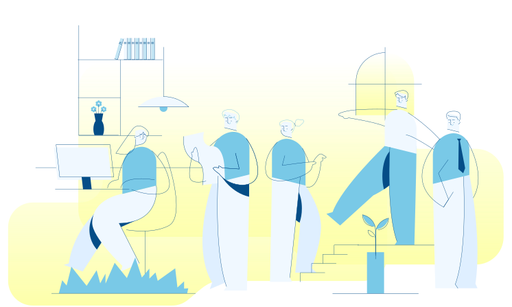

Keuangan Sehat
Pekerja Migran
Pusat jaringan informasi bagi PMI dan keluarga yang dapat memenuhi aspek Pelindungan dan Pemberdayaan sehingga terwujudnya “PMI Berdaya”
JariPMI - Jaringan Informasi Pekerja Migran Indonesia
Menata Masa Depan dengan Pengelolaan Keuangan
Kebiasaaan Baik Mengatur Uang
Hal Baik Membantu Kita Untuk Mencapai Kesejahteraan Keuangan.
Dampak Kebiasaan Buruk Mengatur Keuangan
Hindari Hal Ini Untuk Menghindari Keuangan Tidak Stabil.
Prioritas Keuangan
Urutkan Kebutuhan Dengan Keinginan dan Impian Dimasa Depan Agar Semua Dapat Tercapai.
Negara Tujuan PMI


Pelatihan Untuk Kamu
Cari pelatihan online yang sesuai dengan kebutuhan kamu secara gratis atau murah atau diskon besar


Artikel Terbaru
Temukan berita, artikel, informasi terbaru dari berbagai sumber terpecaya